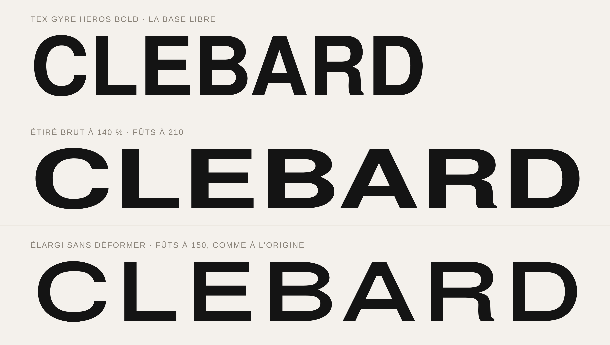
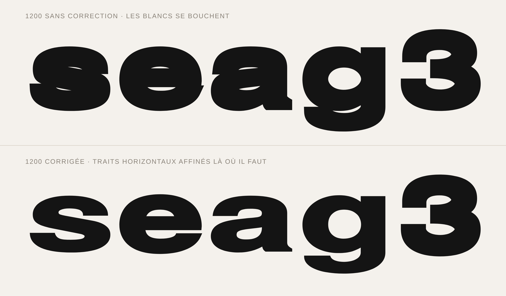
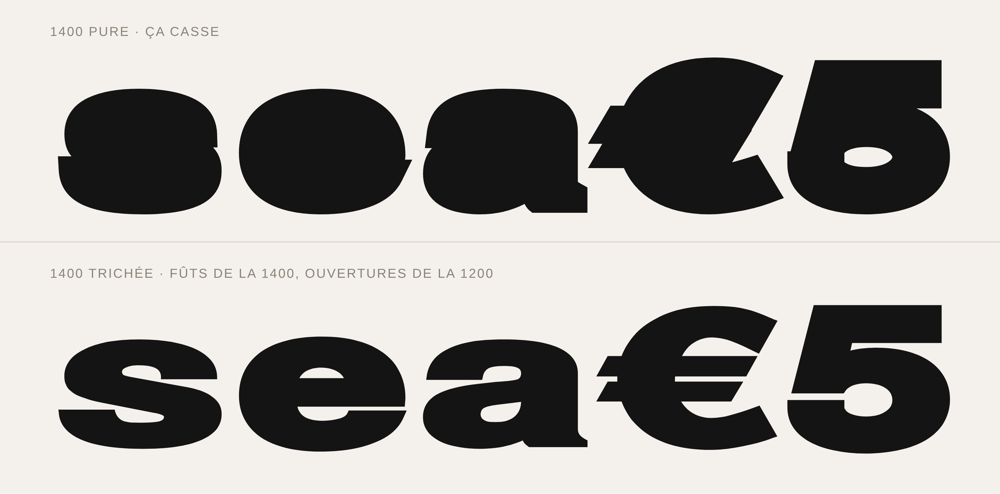
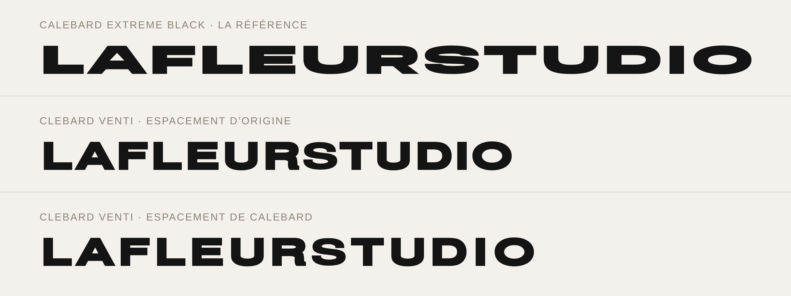

LaFleurStudio · 2026
CLEBARD
Chien qui aboie ne mord pas
Néo-grotesque suisse en extra-large : un chien de race qui a pris du coffre.
6 graisses en tailles de café, du Demi au Trenta.
Les graisses
De 400 à 1400, nommées comme des tailles de café. Au-delà de 700, la police a été poussée plus loin que le Bold d'origine.
Testeur
Clique sur le texte pour écrire le tien.
Astuce : les 6 tailles sont dans une seule famille « Clebard », de 400 à 1000 (voir « Télécharger »).
Caractères
Majuscules, minuscules, chiffres, accents (y compris le vietnamien), grec, ponctuation et symboles.
Comment on l'a faite
Clebard n'a pas été dessinée de zéro : elle part de TeX Gyre Heros, transformée étape par étape avec des scripts Python.
On a pris un classique suisse
On a pris TeX Gyre Heros, la version libre du grand classique suisse des années 1950, et on l'a élargie, épaissie et respacée.
On a gardé son caractère : le R avec sa jambe qui descend à la verticale, le G avec son éperon, les bouts de courbes coupés à l'horizontale.
Élargir à 140 % sans déformer
Étirer une police épaissit ses traits verticaux, mais pas les horizontaux : les lettres ont l'air déformées. Étiré brut à 140 %, le fût du H du Bold passe de 150 à 210 unités.
La solution : étirer, puis rentrer les contours à l'horizontale, d'une ellipse plus large que haute. Les fûts retombent pile à leur épaisseur d'origine, 150, et les courbes restent rondes.

Six graisses, en tailles de café
Chaque graisse part du Regular ou du Bold de Heros. Les contours sont poussés vers l'extérieur ou rentrés jusqu'à une épaisseur visée pour les fûts et pour les traits horizontaux, en prolongeant la progression du Regular au Bold jusqu'à 1400. La hauteur des majuscules est ensuite recalée.
Les noms sont ceux des tailles de café, du Demi au Trenta.
| Taille | Graisse | Déclarée | Source | Fût du H | Trait horizontal |
|---|
Garder les ouvertures
Au-delà de 1000, les blancs du e, du s, du a, du g, du 3, du 5, du 6, du 9 et du € se bouchent. Pour ces lettres seulement, les traits horizontaux sont affinés juste ce qu'il faut pour garder une ouverture lisible.
Les points et les accents sont décalés pour ne pas se coller à la lettre, et la croix du ð reste lisible.

La Trenta, trichée
À 1400, le dessin casse : le s devient un pâté, le € se referme. Là où ça casse, on triche : on reprend la 1200 et on l'épaissit seulement à l'horizontale.
Résultat : les fûts de la 1400 (283 unités) avec les ouvertures de la 1200. Partout ailleurs, c'est de la vraie 1400.

L'espacement de Calebard
Les approches, lettre par lettre, et le crénage viennent de Calebard, mis à la taille de Clebard (même hauteur de majuscules). Avec le L–A resserré de LAFLEURSTUDIO.
Chaque taille prend l'espacement de la graisse de Calebard la plus proche. Les lettres accentuées sont placées comme leur lettre de base.

Télécharger
Libre et gratuite, y compris pour un usage commercial. Garde les fichiers de licence avec la police.
Sur un site web
@font-face { font-family: "Clebard"; font-weight: 400;
src: url(Clebard-Demi.woff2) format("woff2"); }
@font-face { font-family: "Clebard"; font-weight: 1000;
src: url(Clebard-Trenta.woff2) format("woff2"); }
/* … une règle par taille : Demi 400, Short 600, Tall 800,
Grande 900, Venti 950, Trenta 1000 */